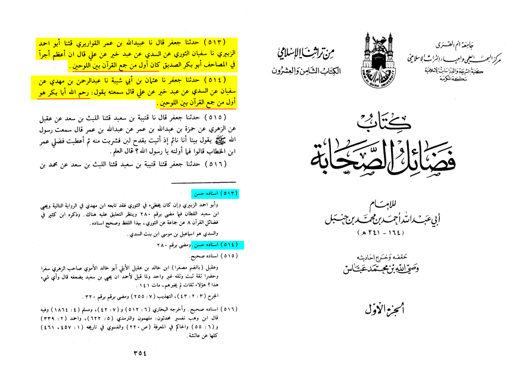

How did Abu-Bakr carry out the compilation?
One year after the Prophet’s death, Abu Bakr (the first Caliph), ordered that the written Qur’an (present with the Prophet’s Companions after the Battle of al-Yamama), be collected. He assigned Zaid b. Thabit to accomplish the mission. Zaid, who had memorized the whole Qur’an, and who had recited the whole text twice in front of the Prophet the year of his death, did not accept any Qur’anic text as authentic unless it existed in a written form, and had been written under the Prophet’s supervision.
The result was, in effect, a recopying of the text which had been copied down before, under the supervision of the Prophet. This copy of the Qur’an collected under the supervision of Zaid remained with Abu Bakr till he died, then with ‘Umar (the second Caliph) until the end of his life, and then with Hafsah (Umar’s daughter, who was the Prophet’s widow). The companions chose to learn the Qur’an in a deliberate manner, as reported by Ibn Mas‘ud who said that they used to learn only ten verses at a time, making sure they completely understood their meanings, and then they would start to apply them in their daily life. Only after this, would they proceed to learn further verses.
https://sunnah.com/bukhari:4986

Narration 513:
Ali said: "The greatest reward in the Masahif is Abu bakr al sideeq, he was the first to compile the Quran between the two bindings".
Narration 514:
Ali said: "May Allah have mercy on Abu Bakr he was the first to compile the Quran between the two bindings".